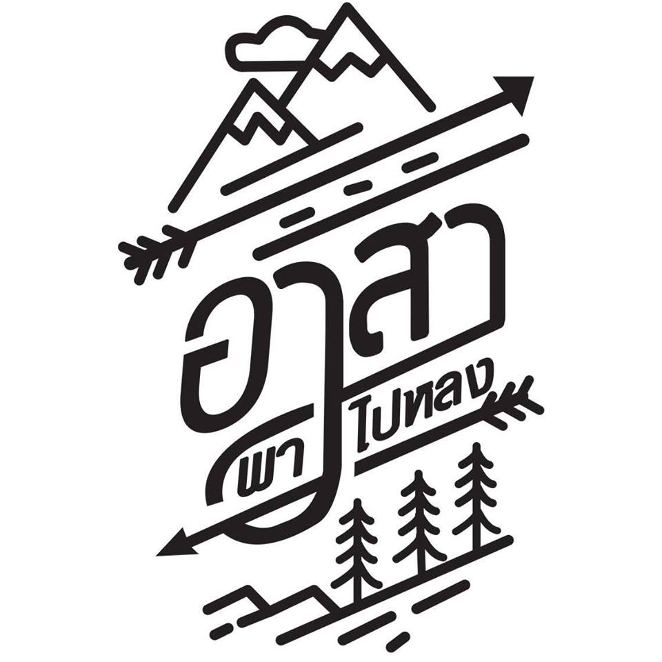

Wellocme
รายการ อาสาพาไปหลง
ใครที่กำลังมองหาสถานที่ท่องเที่ยวในประเทศไทยแล้วไม่รู้จะไปเที่ยวที่ไหน ขอแนะนำ รายการ อาสาพาไปหลง ที่จะทำให้คุณได้รับทั้งสาระความรู้ในการเดินทางและเสียงหัวเราะตลอดmyh'ทริป
ออกอากาศทางช่อง YouTube อาสาพาไปหลง
การหลงทางพิเศษ คุยกับคุณ ว่านไฉ อศิศร

โลโก้รายการ อาสาพาไปหลง.
เลือกรับชมตอนที่น่าสนใจ.
30 ที่เที่ยวธรรมชาติในเมืองไทย